Buttons
Buttons on the 'System Complete' Panel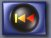
Restart
Use this button to restart the level from the beginning
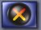
Clean
This puts all pieces that aren't currently being used back on the the left had side of the screen. A piece is considered not being used when there is no light hitting it.
Read Instructions
Use this to bring up these instructions while playing
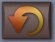
Rotate Counter-Clockwise
Rotates the piece with the yellow highlight counter-clockwise
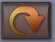
Rotate Clockwise
Rotates the piece with the yellow highlight clockwise

Undo
Undoes the last move. Also can be used in the editor

Redo
Replays an undone move. Can only be used after an undo or redo operation. Can also be used while editing.
Cursors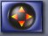
Thumbnails
Use this button to returnt to the thumbnail level selection screen
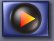
Next Unsolved Level
Use this button to play the next unsolved level
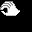
You may move and rotate the piece below this cursor
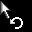
The piece below this cursor may only be rotated
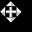
The piece below this cursor may only be moved
This is only used while editing. It's an eraser. Use it to erase!
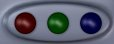
color lights
On the bottom righthand of the screen there are 3 colored lights. Place your cursor over a piece to see what color it is or to see which of the three basic colors make up the color of the piece. The red green and blue lights will light up.

exit button
Use this exit button to return to the thumbnails screen.
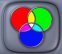
Venn Diagram
Use this handy venn diagram on the gameplay panel to see how mixing the colors together will form new colors.